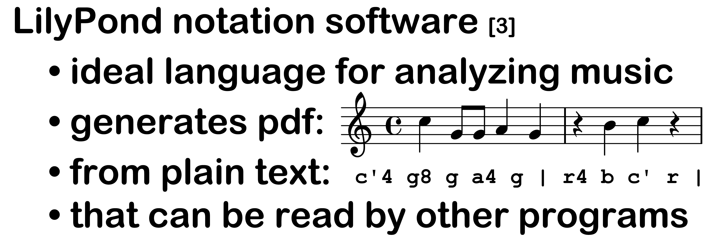
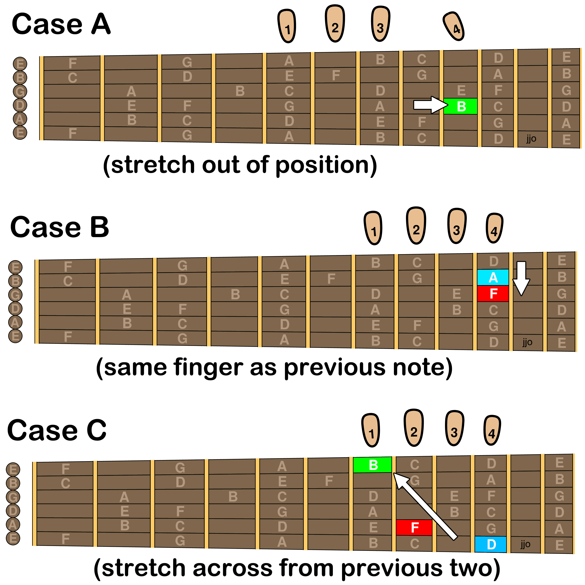
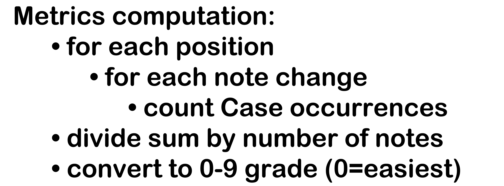
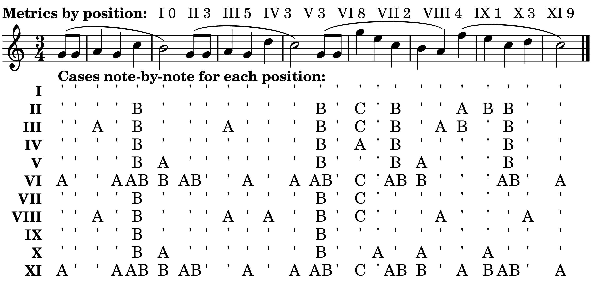

Typesetting all these exercises in LilyPond allowed them to be automatically graded by computer, so that beginning students would get pieces that matched the range of notes they were learning while more advanced students could gauge the difficulty of playing them in different positions.

Even simple melodies can be much harder to play in some positions, due to the three cases of left-hand fingering complexity shown below. A custom Perl script figures out which positions fit the range of a piece, and then, for each such position, steps through the piece note-by-note looking for these cases of complexity:

Counting those cases for each position measures which positions are harder:

That's how we get the metrics by position introduced in the Diatonic book.

The above note-by-note breakdown for Happy Birthday shows how these cases arise. There are no A's for positions I, VII and IX, meaning no out-of-position stretches for this piece. Columns of B's tends to happen when two neighboring notes are a fourth apart, which tends to put them on the same fret (and finger) on neighboring strings. The column of C's happens on the octave skip up to the high G in the third phrase. But none of these effects register in first position so it scores a perfect 0. Positions vary!
[3] Han-Wen Nienhuys and Jan Nieuwenhuizen, "LilyPond, a system for automated music engraving," in Proceedings of the XIV Colloquium on Musical Informatics (Firenze, Italy, 2003), 167-172
https://lilypond.org/
[4] Iznaola, Ricardo. “Left-Hand Technique and the Limits of the Possible.” Guitar Forum 1 (2001): 1–44.
Reprinted in Soundboard Scholar 11 (2026).
https://digitalcommons.du.edu/sbs/vol11/iss1/1/